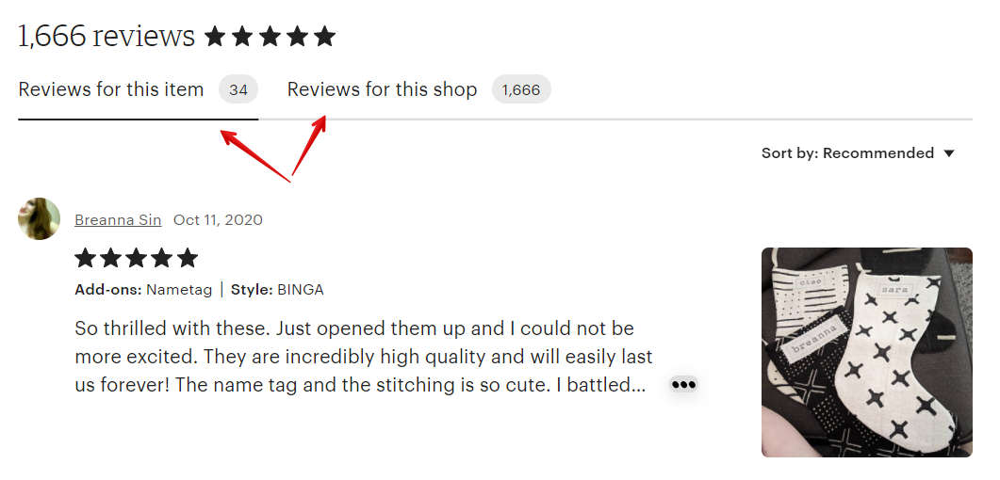

Поэтому постарайтесь написать содержательный и вежливый ответ, который
докажет, что вы очень опечалены случившимся и сделаете всё возможное,
чтобы этого не повторилось.
Например, как этот:
Покупатель: «Была вынуждена вернуть заказ, потому что товары пришли поло-
манными».
Ответ продавца: «Мне очень жаль, что вы получили кольца в таком состоянии.
Вижу, что вы получили посылку полностью раздавленную, хотя я отправляла её
в отличном состоянии. К сожалению, я не могу контролировать работу почты. Я
предложила вам отправить новые кольца, но вы предпочли полный возврат
оплаты – который вы получили».
Оставить комментарий можно в течение 100 дней после даты последнего ре-
дактирования покупателем своего отзыва (или 100 дней с момента его написа-
ния, если он его не редактировал после этого).
Удалить свой комментарий к отзыву вы можете в любой момент.

Если же вы уверены, что клиент привирает и в его отзыве нет ни грамма правды,
то можете пожаловаться на него Etsy. Предоставьте им доказательства того, что
вы всё сделали верно (например, выдержки из правил магазина или переписку
с клиентом). В этом случае есть шанс, что Этси удалит неправомерный отзыв.
Как быть, если покупатель оставил отрицательный отзыв на
потерянную посылку и просит вернуть деньги
Самое главное — не комментировать данный отзыв, так как после этого поку-
патель не сможет его изменить.
По правилам Etsy, в отзыве нельзя «жаловаться» на действия третьих лиц,
например, почтовые службы. Можно оставлять отзыв только о работе конкрет-
ного магазина.
Поэтому, вы можете пожаловаться Etsy и попросить удалить отзыв, который
нарушает правила площадки. Для этого возле нужного отзыва нажмите кнопку
Report this review.
В открывшемся окне выберите пункт Review is about Etsy or third party и напи-
шите сообщение админам площадки.

Пожаловаться на отзыв можно в течение 100 дней после предполагаемой даты
доставки.
Если по какой-то причине Etsy откажутся удалять отзыв, то свяжитесь с покупа-
телем и попробуйте договориться о том, чтобы он изменил отзыв. Укажите, что
для вас крайне важен ваш магазин и его репутация.
Если договориться не получится, то оставьте вежливый комментарий на отзыв,
указав, что вы очень сожалеете о случившейся проблеме в работе почты и что
произвели полный возврат оплаты (если решите это сделать).
По сути, этот комментарий уже для будущих покупателей — поэтому постарай-
тесь, чтобы, прочитав его, они с ещё большим желанием захотели купить у вас.
Как отображаются отзывы на странице листинга
На странице каждого листинга под фотографиями товара показываются отзывы
ваших клиентов. Они разделены на 2 группы-вкладки: отзывы на текущее изде-
лие и общий список отзывов магазина.

Помимо количества звёзд и текста отзыва также показывается вариация ли-
стинга, на которую оставлен отзыв.
Как увеличить количество отзывов
Если с вашими товарами всё хорошо, и вы уверены, что покупатель остался до-
волен, то можно попросить его оставить отзыв.
Зачем просить? Потому что он может забыть о том, где именно покупал товар,
забыть вообще про Этси, замотаться с рутинными домашними делами и т.п.
Как можно напомнить покупателю о возможности оставить отзыв:
• попросить об этом в сопроводительной записке к посылке
• написать личное сообщение и поинтересоваться, всё ли хорошо, доволен
ли он покупкой. Если доволен – то не мог бы он написать пару слов в виде
отзыва.
Главное, будьте тактичны и ненавязчивы.
Стоит ли благодарить покупателя за покупку/отзыв
Здесь нет каких-либо правил, но я считаю, что это стоит делать.

Немногие отвечают на сообщения. Но главное, что покупатель доверился и сде-
лал покупку в моём магазине. Поэтому я считаю, что должна поблагодарить его
за это.
Что делать, если покупатель открыл кейс (спор)
Покупатель может открыть кейс, если он не получил заказ или считает, что он
не соответствует тому, что заявлено в листинге. Вы должны ответить на его пре-
тензию в течение 3 дней.
Изначально кейс – это переписка вас и клиента. Но если покупатель считает,
что у вас не получается прийти к согласию, то он может привлечь к разбира-
тельству админов Этси.
Список своих кейсов доступен на странице Shop Manager – Community and Help
– Cases.
Также
к
этой
странице
можно
перейти
по
ссылке
https://www.etsy.com/your/cases/shop/open
Здесь показан список кейсов, которые открыты вами и те, что открыли в отно-
шении вашего магазина.
Предоставьте в комментариях к кейсу всю необходимую информацию, которая
у вас есть – например трек-номер (если клиент пожаловался, что не получил
заказ), фото чека об отправке, фото посылки и т.п.
Кейс может быть закрыт:
• автоматически, если вы вернули оплату через Etsy Payments
• покупателем, если он удовлетворён решением, которое вы предложили
• если вы добавили трек-номер, который подтверждает, что товар достав-
лен адресату.
Как покупатель может закрыть открытый им кейс
Для этого покупателю необходимо:
1. Перейти на страницу You — Account settings — Cases reported by you.
2. Кликнуть на открытый кейс.
3. В открывшемся кейсе нажать кнопку Close case.
Что такое ODR и Service Level Standards
В конце 2019 года Etsy ввели рейтинг ODR - Order Dissatisfaction Rate.
Он показывал, насколько покупатели в последнее время довольны или недо-
вольны магазином.
Чем ниже рейтинг, тем лучше. В идеале - 0%.
Если рейтинг превышал 1%, то Etsy отправляли магазину предупреждение о
том, что нужно исправлять “качество обслуживания”. После двух предупрежде-
ний магазин могли временно или постоянно заблокировать.
С началом пандемии в 2020 году Etsy сказали, что не будут учитывать этот рей-
тинг, так как из-за массовой отмены авиарейсов и введения различных ограни-
чений сроки доставки посылок по всему миру сильно увеличились.
А примерно осенью 2020 в личном кабинете продавца пропала страница с ODR
рейтингом. Также удалена страница об ODR из справочной информации для
продавцов.
По всей видимости, ODR в том виде, котором он действовал, уже не существует.
По крайней мере до конца пандемии.
Но у Etsy есть другая формулировка требований к продавцам - Service Level
Standards.
В ней сказано, что Etsy следят за тем:
• вовремя ли отправляются заказы в магазине
• как продавец общается с покупателями
• есть ли негативные отзывы и открытые кейсы
• по силам ли продавцу справиться с большим объёмом заказов, которые к
нему недавно пришли
Если Etsy посчитают, что магазин работает некачественно или есть большой
риск негативных отзывов от клиентов (например, когда продавцу приходит
очень много заказов и есть риск просрочить их отправку), то они могут ограни-

чить видимость листингов или всего магазина в поиске, а также временно за-
блокировать
его.
Если со временем ситуация не изменится – то магазин могут заблокировать
навсегда.
Молодые магазины с плохим обслуживанием могут заблокировать сразу и без
предупреждений.
9. Отмена заказа
В каких случаях можно отменить заказ на Etsy
Возникают самые разные ситуации, когда требуется отменить заказ, оформить
полный или частичный возврат средств покупателю. В каких случаях это не бу-
дет противоречить правилам Этси?
• если покупатель не оплатил покупку, то продавец может отменить заказ
• если и покупатель, и продавец договорились о том, что транзакция будет
отменена, а деньги возвращены (например, до отправки посылки) – вы
можете смело отменять заказ
• продавец решил отказаться работать с покупателем и, если он уже опла-
тил, то нужно вернуть всю сумму (стоимость товара и доставки) и отменить
заказ
• если покупатель не получил заказ и запросил возврат оплаты, несмотря
на то, что продавец предоставили всю информацию об отправке, стои-
мость товара возместить необходимо. Возврат расходов за отправку — на
усмотрение каждого продавца. Но об этом следует прописать в правилах.
Если же оплата произошла через Etsy Payments, то необходимо возме-
стить полную сумму
• если покупатель получил товар, но он его не устроил. Вы можете отменить
покупку по обоюдному согласию. Вы возвращаете деньги, а он — товар.
Как отменить заказ
Бывают другие ситуации, когда заказ оплачен, но покупатель хочет вернуть
средства. В первую очередь обратите внимание на правила своего магазина.
Бывают магазины, которые прописывают в Policies и FAQ, что все продажи
окончательны и не подлежат отмене. А деньги возвращаются лишь в том случае,
если в течение оговоренного срока посылка не добралась до покупателя.
Итак, предположим, что политика вашего магазина такова, что вы идете
навстречу любому покупателю и отменяете заказы не только до отправки, но и
в том случае, если покупателя не устроил товар.